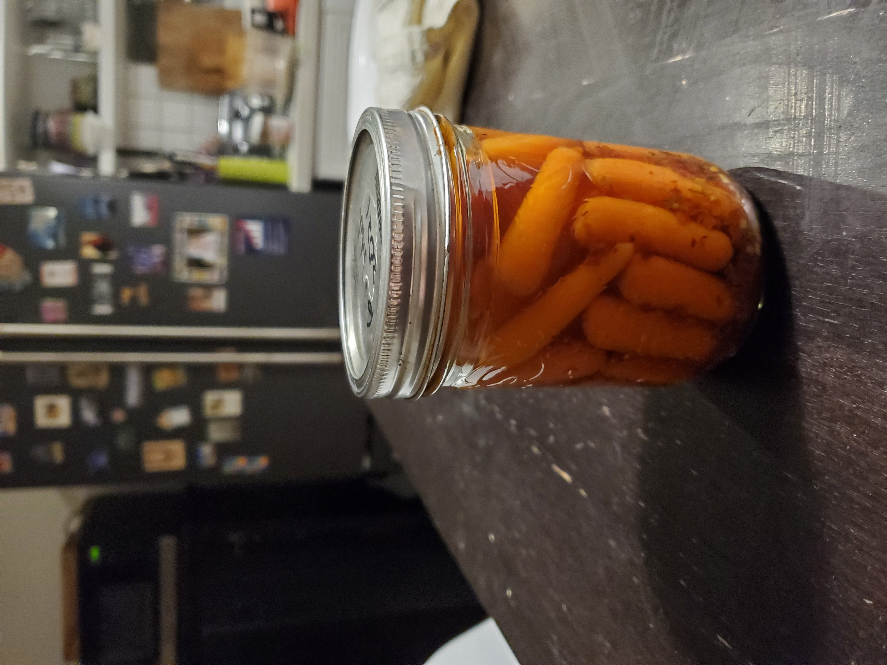

Pickled Carrots
By popular request, here is my spouse’s recipe for pickled carrots, which is derived from the one in Topp and Howard’s excellent The Complete Book of Small-Batch Preserving. Note that this is a canning recipe, not a cold pickle. Note also that the original recipe calls for only ¼ tsp of hot pepper flakes per jar, to which we say, “Bah.”

| Medieval | ingredient | metric |
|---|---|---|
| 3 tbsp | finely chopped fresh oregano or 1 tbsp (15 mL) dried | 45 mL |
| 1-3 tsp | hot pepper flakes (per jar) | 5-15 mL |
| 2 | small cloves garlic | 2 |
| 1 lb | peeled baby carrots | 500 g |
| 1 ½ cups | white vinegar | 375 mL |
| ½ cup | granulated sugar | 125 mL |
| ⅓ cup | water | 75 mL |
| 1 tsp | pickling salt | 1 mL |
-
Remove the hot jars from the canner and add one garlic clove and your desired volume of chili flakes to each jar.
-
Pack in the carrots (see picture) leaving 1cm (½ inch) of head space.
-
Combine vinegar, sugar, water, and salt in a small saucepan and bring to a boil.
-
Pour hot liquid over carrots (in jars) to within ½ inch of the top.
-
Process for canning: 15 minutes for 500 mL jars.
A 2lb (approx. 1kg) bag of baby carrots will make 1750 mL of pickle. We usually use 250 mL wide-mouth jars—they make great gifts.